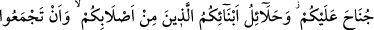

23- Analarınız, kızlarınız, kızkardeşleriniz, halalarınız, teyzeleriniz, kardeş
kızları, kız kardeş kızları, sizi emziren analarınız, süt bacılarınız, eşlerinizin
anaları, kendileriyle birleştiğiniz eşlerinizden olup (evlerinizde) bulunan üvey
kızlarınız size haram kılındı. Eğer onlarla (nikâhlanıp da) henüz birleşmemişseniz
kızlarını almanızda size bir mahzur yoktur. Kendi sulbünüzden olan oğullarınızın
eşleri ve iki kız kardeşi birden almak da size haram kılındı; ancak geçen geçmiştir.
Allah çok bağışlayıcı ve esirgeyicidir.
1- “Analarınız” ifâdesi, ne kadar yukarı giderse gitsin ana-baba bir yâhut ikisinden
biri tarafından büyük anneleri de içine alır.
2- “Kızlarınız”; sulbünüzden gelen kızlarınız ve ne kadar aşağı giderse gitsin
çocuklarınızın kızları,
3- “Kızkardeşleriniz”; ana-baba bir yâhut ikisinden biri tarafından olan üç cihetten
kızkardeşleri içine alır.
Analarla ve kız evlatlarla evlenmenin haramlığı, Âdem (a.s.)’dan bugüne kadar
geçerlidir. İlâhî dinlerden hiçbirinde bunlarla evlenmek helal olmamıştır.
Kızkardeşlerle evlenmeye gelince, bunun Âdem (a.s.) zamânında mübah olduğu
nakledilmiştir. Allah Teâlâ bunu ancak zarûret bulunduğu için mübah kılmıştır.
4- “Halalarınız”; hala, yakın olsun uzak olsun babanızı doğuran kadının doğurduğu
hanımların tamâmıdır.
5- “Teyzeleriniz”; teyze, yakın olsun uzak olsun annenizi doğuran kadının doğurduğu
kadınların tamâmıdır. Yâni ister ana-baba bir, isterse ikisinden biri tarafından olsun
halalar, baba ve dedelerin kızkardeşlerini; kezâ teyzeler anne ve büyük annelerin
kızkardeşlerini içine alır.
6,7- “Erkek kardeş kızları ve kız kardeş kızları”; ve bunların ne kadar aşağı
giderse gitsin çocuklarının kızları.
Allah Teâlâ yedisi nesep cihetinden -ki bunlar yukarda zikredilenlerdir, yedisi de
sebep cihetinden olmak üzere toplam on dört sınıf kadınla evlenmeyi haram kılmıştır.
Şimdi de sebep cihetinden haram kılınan kadınları saymaya başlıyor:
8,9- “Sizi emziren analarınız, süt bacılarınız”; Nesep açısından analarınız ve kız